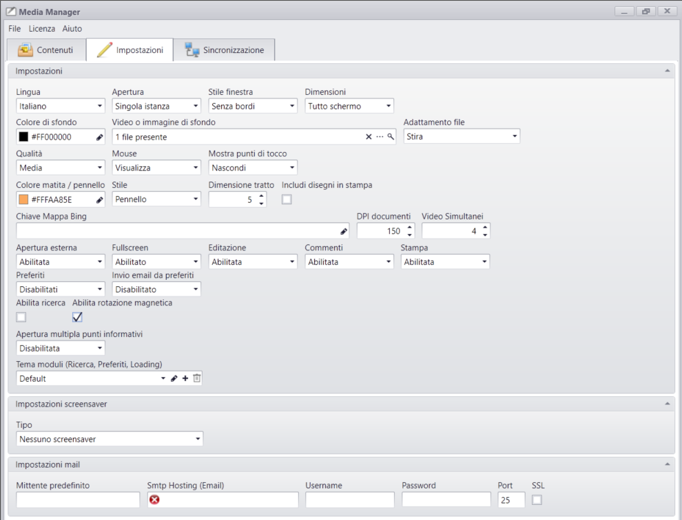

SETTINGS

Lingua
Scelta della lingua tra Italiano e Inglese del Media Manager.
Apertura
Singola Istanza: Può essere aperto un solo Touchviewer [default].
Istanze Multiple: Possono essere aperte più finestre del Touchviewer.
Stile finestra
Senza bordi: Il Media Presenter si apre in modalità fullscreen [default].
Standard: Il Media Presenter si apre in modalità windowed.
Dimensioni
Tutto schermo: Il Media Presenter occuperà tutto lo schermo disponibile.
Personalizzate: Il Media Presenter si aprirà alla dimensione impostata nelle proprietà aggiuntive:
- Larghezza: Larghezza della finestra:
- Altezza: Altezza della finestra:
Posizione: Posizione in cui si deve aprire la finestra:
- Centro: La finestra si aprirà al centro dello schermo.
- Personalizzata: La finestra si potrà aprire nella posizione desiderata, impostando le proprietà aggiuntive:
- Sinistra: Posizione rispetto il margine sinistro.
- Alto: Posione rispetto il margine alto.
Background
Colore di sfondo: Tinta unita che deve avere il background dello stage.
Video o immagine di sfondo: Immagine di Default da usare come background.
Adattamento file: Determina la modalità di adattamento del background rispetto allo stage:
- Stira: Il file viene adattato alla risoluzione della finestra senza mantenere le proporzioni originarie [default]
- Nessuno: il file non viene adattato ed è possibile scegliere in quale posizione deve comparire
- Adatta Internamente: Il file viene adattato mantenendo le sue proprozioni all'interno della finestra
- Adatta Esternamente: Il file viene adattato mantenendo le sue proprozioni coprendo tutta l'area visibile dello stage
Qualità
Qualità: Rappresenta l'indice di qualità dell'aspetto grafico generale del software e dei contenuti in esso caricati.
Mouse: Mostra / nascondo il puntatore del mouse.
Punti di tocco: Mostra / nascondo il cursore del touch.
Colore punti di tocco: Indica il colore con cui viene visualizzato il cursore del touch.
DPI Documenti: Determina il fattore di qualità per la conversione automatica dei documenti PDF, DOC, DOCX.
Video simultanei: Determina il numero di video da riprodurre contemporaneamente sullo stage.
Draw-on
Colore matita pennello: Imposta il colore predefinito per la funzionalità draw-on.
Stile: Imposta lo stile predefinito per la funzionalità draw-on.
Dimensione tratto: Imposta la dimensione tratto predefinita per la funzionalità draw-on.
Includi disegni in stampa: Include i disegni nella stampa dei documenti.
Impostazioni generali
Chiave mappa di bing: Specificare una chiave registrata per l'utilizzo del provider Bing map.
Apertura esterna dei file: Abilita l'opzione per l'apertura del contenuto con il programma predefinito di windows.
Full screen: Abilita l'opzione per l'apertura del contenuto a schermo intero.
Editazione: Abilita la funzionalità draw-on su tutti i contenuti.
Stampa: Abilita la funzionalità di stampa su tutti i contenuti.
Preferiti: Abilita la funzionalità aggiungi a preferiti su tutti i contenuti.
Invio email da preferiti: Abilita la possibilità di condividere contenuti tramite email:
- Mittente predefinito: Indirizzo email predefinito per l'invio delle emal.
- Smtp Hosting: Specificare il protocollo SMTP per la condivisione di contenuti tramite email.
- Username: Specificare lo Username dell'account per la condivisione di contenuti tramite email.
- Password: Specificare la Password dell'account per la condivisione di contenuti tramite email.
- Port: Specificare la porta del protocollo SMTP per la condivisione di contenuti tramite email.
- Ssl: Specificare se l'account smtp richiede l'SSL attivo.
Abilita ricerca: Viene abilitata la funzione di ricerca all'interno dell'archivio.
Abilita rotazione magnetica: Quando è abilitata i contenuti potranno essere ruotati a step di 90°.
Apertura multipla punti informativi: Quando è abilitata si potranno aprirre più punti informativi alla volta.
Tema moduli: Personalizzazione grafica dei moduli "Preferiti", "Ricerca", etc Vai al Tema Moduli
Impostazioni screensaver
Tipo: Abilita lo screensaver per sequenze di immagini e video.
Attivazione: Valore in secondi che determina l'attivazione dello screensaver in caso di inattività dell'utente.
Tempo foto: Valore in secondi che determina la pausa delle foto in sequenza.
Video e/o immagini: Selezione dei file da importare nello screensaver.
Adattamento file: Determina la modalità di adattamento dei file rispetto allo stage:
- Stira: Il file viene adattato alla risoluzione della finestra senza mantenere le proporzioni originarie [default]
- Nessuno: il file non viene adattato ed è possibile scegliere in quale posizione deve comparire
- Adatta Internamente: Il file viene adattato mantenendo le sue proprozioni all'interno della finestra
- Adatta Esternamente: Il file viene adattato mantenendo le sue proprozioni coprendo tutta l'area visibile dello stage
E' possibile inoltre alternare foto e video all'interno dello stesso screensaver.